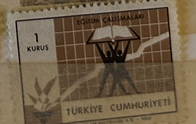
| SOURCE | TITLE| IMAGE MATCH | click to source page |
| gbenzi.it | échange timbres, catalogue Turquie 1969 Turquie 1969 | 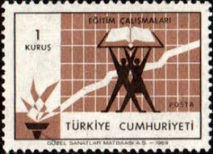 |
| eBay | 1969 Turkey SC# 1805-1807 - Educational Progress - 2 Different Stamps - M-NH | eBay | 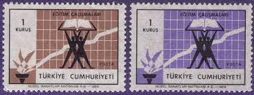 |
| Alamy | Postage stamp from turkey depicting hi-res stock photography and images - Alamy | 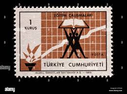 |
| Todocolección | turquía. economía, desarrollo e industria. 1969 - Compra venta en todocoleccion | 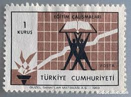 |
| Koleksiyon Market | 1969 Kalkınan Türkiye Konulu Sürekli Seri Pulları | 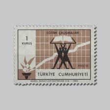 |
| Osta | Leiunurk 3165 Varia Türgi (247129298) - Osta.ee | 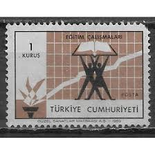 |
| Alamy | On hold stamp hi-res stock photography and images - Page 2 - Alamy | 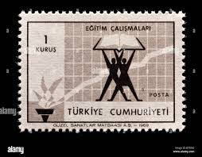 |
| kitantik | 1969 Türkiye Ekonomisi 1 kuruş (ws0429) - Efemera - kitantik | #13432410000682 | 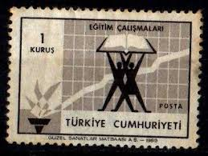 |
| Osta | Türgi 1969 (Mi-2129) MNH (247277860) - Osta.ee | 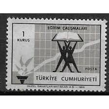 |
| Alamy | Postage stamp turkey hi-res stock photography and images - Alamy | 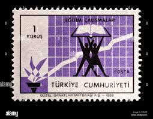 |
| esam.ir | تمبر ترکیه مهر نخورده | 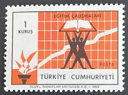 |
| Alamy | Timbre Egitim calismalari. Posta. Turkiye cumhuriyeti. 1969. 1 Kurus Stock Photo - Alamy | 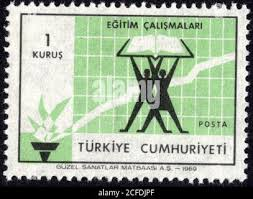 |
| Todocolección | sello usado turquía 1988 - no use medicamentos - Buy Antique stamps of Turkey on todocoleccion | 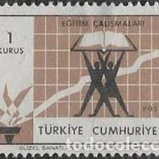 |
| Dreamstime.com | Republic of Turkey Historical Stamp. a Postage Stamp Printed in Republic of Turkey Editorial Stock Photo - Image of envelope, fast: 185785318 | 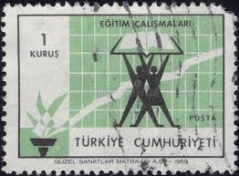 |
| Todocolección | turquia 174/6 usada, reconquista de andrinople - Buy Antique stamps of Turkey on todocoleccion | 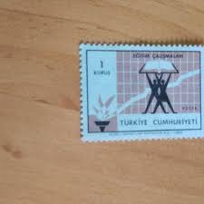 |
| alamy.it | Postage stamp from turkey depicting immagini e fotografie stock ad alta risoluzione - Alamy | 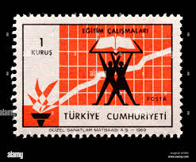 |
| alamy.de | Moskau, Russland. 1. April 2023. Der Künstler Igor Volozhanin im Hintergrund seiner Werke wird auf der 2023 im Gostiny Dvor Exhibition Center in Moskau, Russland, stattfindenden Ausstellung Art Russia für zeitgenössische Kunst | 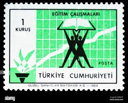 |
| Osta | Türgi 1969, haridus ja koolitus. (199118352) - Osta.ee | 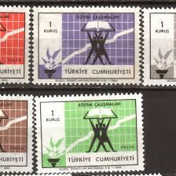 |
| Alamy | Turkish postage stamp hi-res stock photography and images - Page 2 - Alamy | 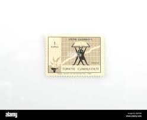 |
| Nadir Kitap | EĞİTİM ÇALIŞMALARI KONULU 3 ADET PUL - 1969 | Nadir Kitap | 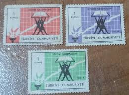 |
| Osta.ee | Türgi 1969 (Mi-2128,2130) MNH (247773517) - Osta.ee | 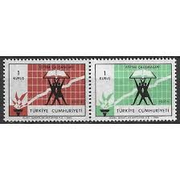 |
| Free stamp catalogue | Stamps with the theme Agriculture - Freestampcatalogue.com - The free online stampcatalogue with over 500.000 stamps listed. | 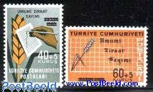 |
| Koleksiyon Odası | 1980-1989 Yılı Emisyonları – Koleksiyon Odası | 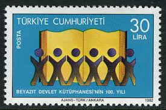 |
| eBay | A7536)Turkey 1963 Scott# B93/B94 MNH** Agr. Census | eBay | 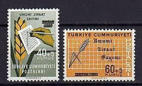 |
| Pulhane.com | 19811801.jpg | 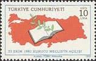 |
| Stampedia | stampedia TURKEY STAMP catalog | 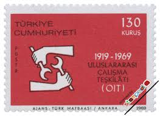 |
| Delcampe | Search in the "1970-79 > Unused stamps" category | Delcampe | 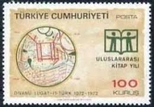 |
| kitantik | Efemera - 1990 DÜNYA OKUMA YAZMA YILI - kitantik - kitaLog | 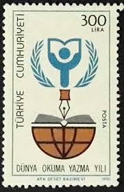 |
| DergiPark | ARŞİV DÜNYASI | |
| Shutterstock | 9+ Thousand Library Stamp Royalty-Free Images, Stock Photos & Pictures | Shutterstock | 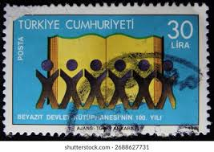 |
| eBay | Turkey SC 1842-3 MNH (9gvm) | eBay | 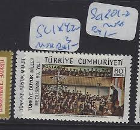 |
| HipStamp | Turkey 1969 50th Anniversary of International Labor Organization SET SG #2275 | Europe - Turkey, Stamp / HipStamp | 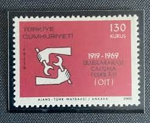 |
| owlsandbooks.co.uk | BOOK STAMPS TURKEY | 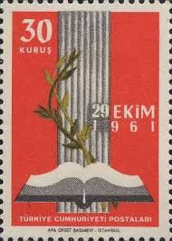 |
| YouTube | Nüfus Sayımı - 1960 - YouTube | 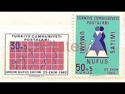 |
| kitantik | Efemera - Türk Pulu - Turkish Stamp - Postadan Geçmiş Pul Filateli - 23 EKİM 1981 KURUCU MECLİS'İN AÇILIŞI TEMALI PUL, 30 LİRA - Türkiye Cumhuriyeti - NOSTALJİK DOĞUM GÜNÜ HEDİYESİ - kitantik - kitaLog | 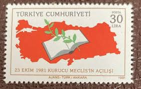 |
| eBay | Turkey 1983, 1st Anniversary of the New Constitution set MNH, Mi 2627-28 | eBay | 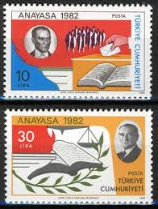 |
| kitantik | 1981 KURUCU MECLİS İN AÇILIŞI................. - Efemera - kitantik | #3822111000049 | 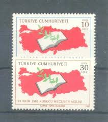 |
| Stampedia | stampedia TURKEY STAMP catalog | 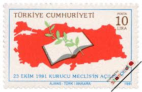 |
| eBay | Turkey Scott #1523-24 VF MNH 1961 Inaguration of New Parliament | eBay | 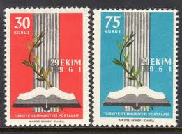 |
| HipStamp | Turkey Stamp:1981 Sc#2194- Centenary of Kemal Ataturk MNH S/S Sheet Very Fine | Europe - Turkey, General Issue Stamp / HipStamp | 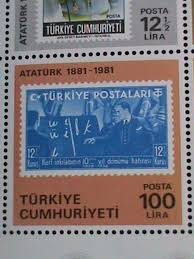 |
| Flickr | Turkey postage stamp: Ankara 70 flower | c. 1970, in commemo… | Flickr | 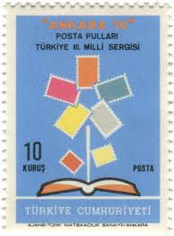 |
| iStock | Turkish Stamps Stock Photo - Download Image Now - Black Background, Black Color, Cancellation - iStock | 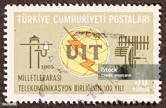 |
| Todocolección | sello de turquia. ”anatolia” * año 1920. yvert - Buy Antique stamps of Turkey on todocoleccion | 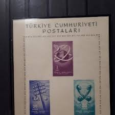 |
| esam.ir | سری تمبر ترکیه...2 | 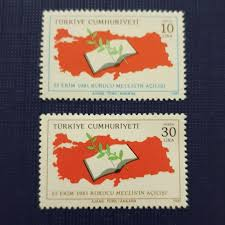 |
| Shutterstock | Ankara Türkiye 03082022 Republic Turkey Postage Stock Photo 2133363899 | Shutterstock | 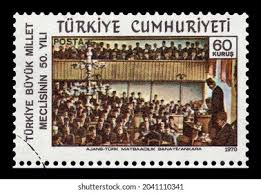 |
| Dreamstime.com | Postage Stamp Printed in Turkey Shows Open Book and Olive Branch, Inauguration of the New Parliament Serie, Circa 1961 Editorial Photography - Image of postmark, letter: 181072852 | 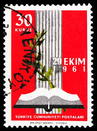 |
| Benim Koleksiyonum | Avrupa Pullarının 50. Yılı (2005) - Özel Blok Dantelli Pul | www.benimkoleksiyonum.com | 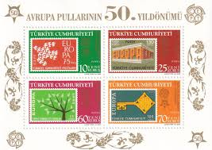 |
| eBay | Turkey ILO SC 1797 MNH (7gvm) | eBay | 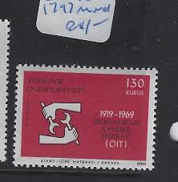 |
| lastdodo.com | Mustafa Kemal Atatürk [1881-1938] Stamp catalogue - LastDodo | 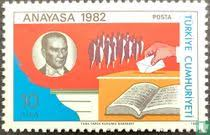 |
| eBay | TURKEY # 1720 MNH UNESCO UNITED NATIONS | eBay | 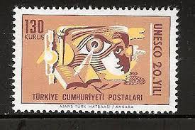 |
| Ankara Hacı Bayram Veli Üniversitesi | Visualizing Population Policies: An Iconographic Analysis of Turkish Postage Stamps (1927-1965) | |
| Shutterstock | Istanbul Turkey December 27 2020 Turkish Stock Photo 2688627691 | Shutterstock | |
| eBay | TURKEY Scott 2242-3 2245 Mint NH | eBay | |
| Stamp Community Forum | Women In Our Society: Women's Rights, Empowerment, And Social Progress - Page 9 - Stamp Community Forum | |
| eBay | Multi-Color Individual Turkish Stamps for sale | eBay | |
| eBay | Turkey 1965, 20th Anniversary of the United Nations set MNH, Mi 1951-52 | eBay | |
| Pngtree | Stamp Muse Globe Roll Photo Background And Picture For Free Download - Pngtree | |
| eBay | Turkey 781-784, MNH. Mi 1010-1013. Turkish Historical Congress, 1937. Ataturk. | eBay | |
| Benim Koleksiyonum | 1981 KURUCU MECLİS'İN AÇILIŞI Dörtlü Blok Pul | www.benimkoleksiyonum.com |